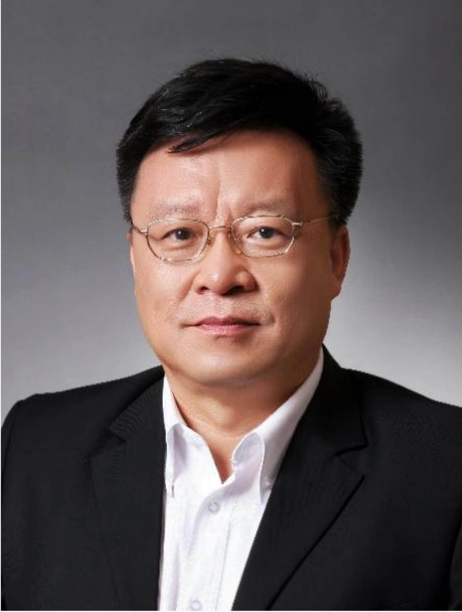
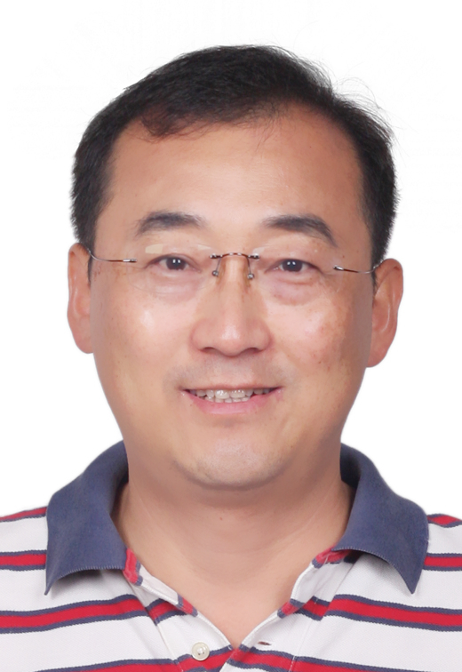
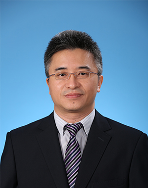
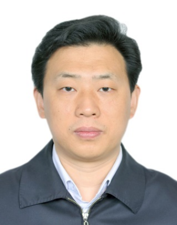
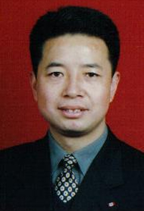
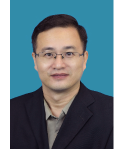

2023 — present
Harbin Institute of Technology (Shenzhen) · Peng Cheng Laboratory
Ph.D. candidate in Electronic Information (Computer Science and Technology)
Advisor: Prof. Wen Gao | Co-advisor: Prof. Ge Li
Yang Yang received the M.S. degree in electronic information from Peking University, Beijing, China, in 2020. He is currently a Ph.D. candidate at the Harbin Institute of Technology, Shenzhen, China, jointly trained at Peng Cheng Laboratory, advised by Prof. Wen Gao (Member of the Chinese Academy of Engineering). His research interests include multi-robot collaboration, active perception, task planning, anomaly detection & recovery in multi-robot systems, and applications to self-driving laboratories and intelligent manufacturing.





